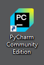
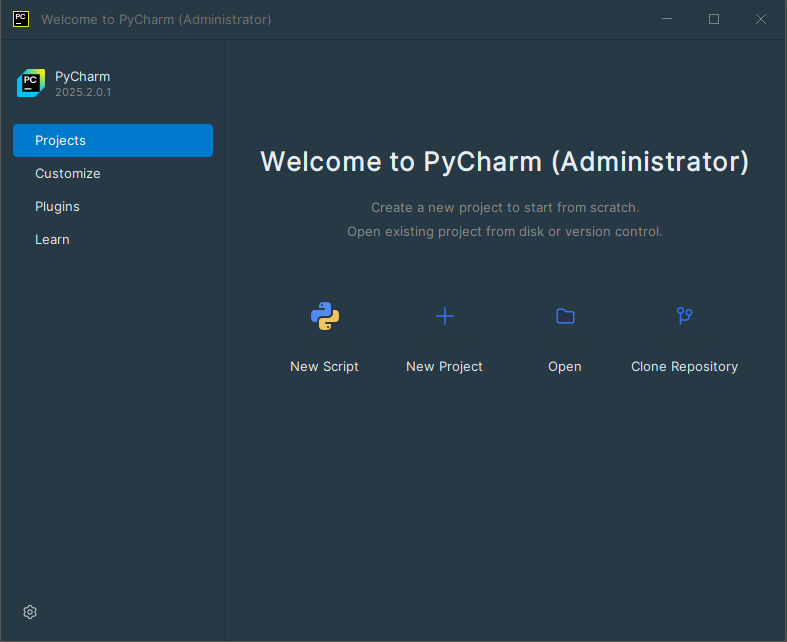
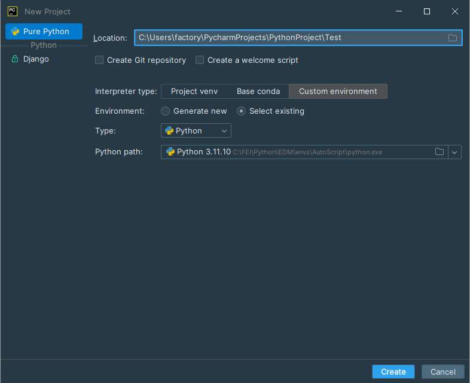
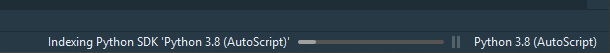
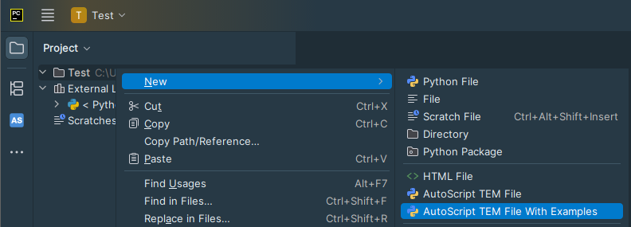

This section will walk you through the process of creating and executing a test project with the AutoScript
software.
(or more specifically on the computer where the AutoScript Client software is installed.)
-
Open PyCharm Community Edition.

-
If PyCharm is started for the first time, then:
-
Accept the JetBrains Privacy Policy: Tick I confirm… and select
Continue.
-
At the data sharing options, select Don't send.
-
In the PyCharm welcome screen, select New Project.

-
In Location, enter the folder name for the new project: "Test". This will also be the name of
the new project.
Keep the Python interpreter option set to the preselected "Python 3.11 (AutoScript)" option.
Press Create.

When creating the first project in PyCharm with the specific interpreter settings,
it scans Python packages installed with that interpreter. This process is called
indexing.
During indexing, the editor's functionality is limited, and scripts cannot be executed.
Wait for the indexing to finish. This may take up to 15 minutes.

-
In the Project panel, right-click on the Test project and select "New > AutoScript File with
Examples".

-
Enter the filename for the new script: "test". The script file will be saved as test.py.
-
In the script, locate the function
microscope.connect()
This function, when called with no parameters, will attempt to contact the AutoScript server at the
default microscope computer IP address 192.168.0.1. If you intend to run the script locally on
the microscope PC (you are in
Local scripting
configuration), modify the command to:
microscope.connect("localhost")
-
In the Project panel, right-click on test.py and select Run test.

-
After closing the window with the acquired image, the "
Example script finished successfully"
appears in the output panel.